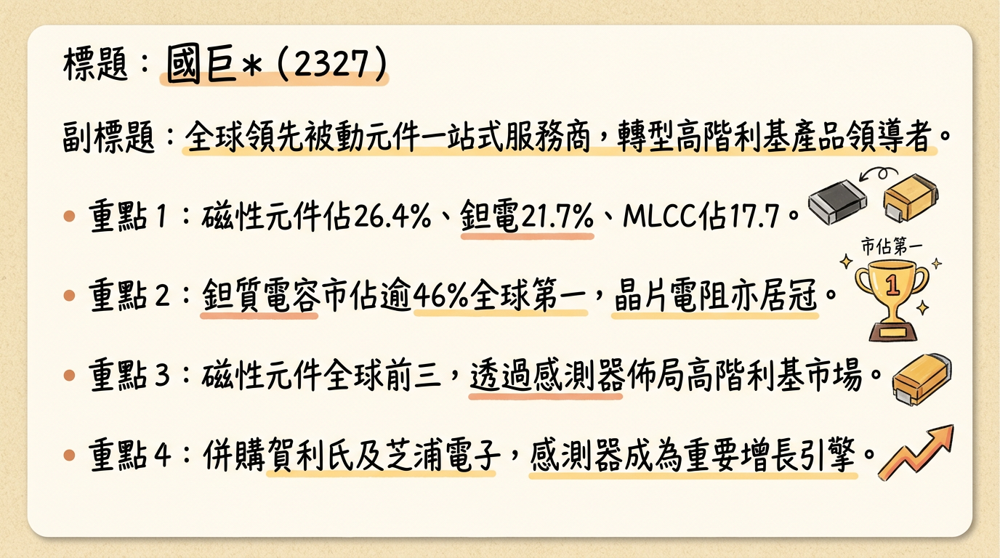
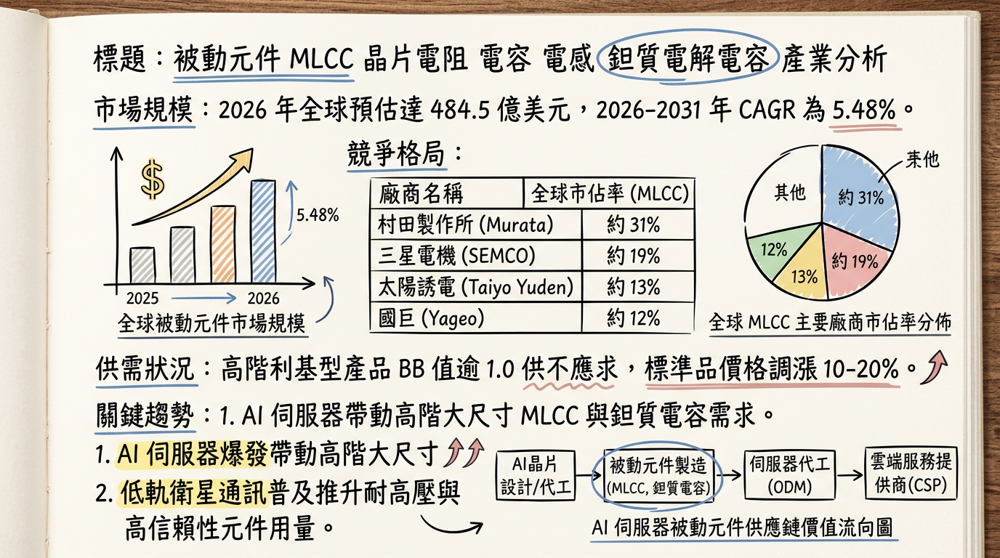
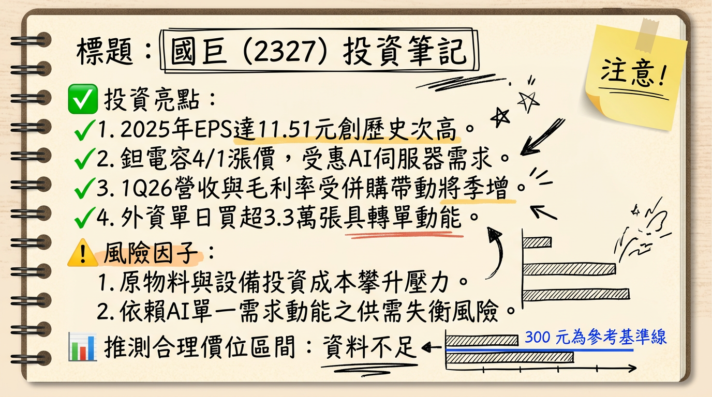

國巨已從標準品供應商轉型為全球高階利基型電子零組件領導者，受惠於 AI 伺服器需求爆發與併購整合效益，2026 年進入「獲利增長與毛利擴張」的雙擊期。
國巨（YAGEO）為全球被動元件龍頭，透過頻繁的國際併購（KEMET、Pulse、Heraeus、Shibaura）建構高度垂直整合的產品線。目前高階利基型產品（Specialty）佔比已達 82%，成功降低大宗商品市場的週期波動影響。
2025 Q4 營收結構分析| 產品線 | 營收佔比 | 市場地位 | 核心應用 |
|---|---|---|---|
| 磁性元件 | 26.4% | 全球前三 / 網絡變壓器第一 | 通訊、電源、AI 伺服器 |
| 鉭質電容 | 21.7% | 全球第一 (市佔 >46%) | AI 伺服器、航太、醫療 |
| 積層陶瓷電容 (MLCC) | 17.7% | 全球第三 | 消費電子、車用、工控 |
| 晶片電阻 (R-Chip) | 13.6% | 全球第一 | 全產業通用 |
| 感測元件 (Sensors) | 11.2% | 持續提升中 | 車用、高壓直流 (HVDC) |
| 其他 | 9.4% | - | 包含天線、電解電容等 |
| 月份 | 營收金額 (億新台幣) | 月增率 MoM | 年增率 YoY | 備註 |
|---|---|---|---|---|
| 2026/01 | 130.30 | +10.1% | +27.13% | 創單月歷史新高，AI 需求爆發 |
| 2025/12 | 118.30 | +1.3% | +15.2% | 年底庫存調整仍維持正增長 |
| 2025/11 | 116.70 | -6.3% | +14.8% | 併入芝浦電子完整營收 |
| 2025/10 | 124.60 | +6.7% | +18.5% | 第四季出貨高峰 |
| 2025/09 | 116.80 | +3.2% | +12.2% | 首度突破 115 億大關 |
| 2025/08 | 113.18 | +2.7% | +11.1% | 股票面額拆分執行月份 |
| 券商名稱 | 目標價 | 評等 | 報告日期 | 核心邏輯 |
|---|---|---|---|---|
| 摩根大通 (JPM) | 362 元 | 優於大盤 | 2026/02/26 | AI 相關產品調漲利潤高於預期 |
| 富邦投顧 | 362 元 | 買進 | 2026/02/26 | 2026 EPS 上修至 16 元以上 |
| 匯豐證券 | 351 元 | 買進 | 2026/02/26 | 全球感測器整合效益顯現 |
| 野村證券 | 350 元 | 買進 | 2026/02/26 | B/B Ratio 持續 > 1，動能強勁 |
| 永豐投顧 | 330 元 | 買進 | 2026/02/26 | 殖利率與成長性兼具 |
| 季度 | 毛利率 (GPM) | 營業利益率 (OPM) | 稅後淨利率 (NPM) | 單季 EPS (新面額) |
|---|---|---|---|---|
| 2025 Q4 | 37.3% | 24.3% | 18.7% | 3.29 元 |
| 2025 Q3 | 36.2% | 22.9% | 19.3% | 3.10 元 |
| 2025 Q2 | 35.6% | 21.5% | 15.3% | 2.44 元 (換算值) |
| 2025 Q1 | 35.6% | 20.8% | 17.9% | 2.69 元 (換算值) |
| 排名 | 公司 | 總部 | 主要優勢 | 市佔率預估 | 國巨對位 |
|---|---|---|---|---|---|
| 1 | 村田製作所 (Murata) | 日本 | 超高階 MLCC | ~23% | 技術追趕中 |
| 2 | TDK | 日本 | 磁性元件 | ~14% | 旗鼓相當 |
| 3 | 國巨 (YAGEO) | 台灣 | 電阻、鉭電、感測 | ~12-13% | 利基型龍頭 |
| 4 | 三星電機 (SEMCO) | 韓國 | 標準品 MLCC | ~10% | 國巨毛利領先 |
* 轉單效應： 日系大廠產能吃緊，訂單外溢至國巨高階 MLCC。
* 新品上市： 切入 NVIDIA GB300 供應鏈，單機價值量提升。
* 匯率風險： 全球布局廣，非營業損益受美元、日圓波動影響。
2. 感測元件併購效益進入收割期。
3. 標準品市場底部回升，開啟補庫存行情。
本報告由 AI 自動產生，資料來源為公開網路資訊，僅供參考，不構成投資建議。產生時間：2026-03-04 07:56


